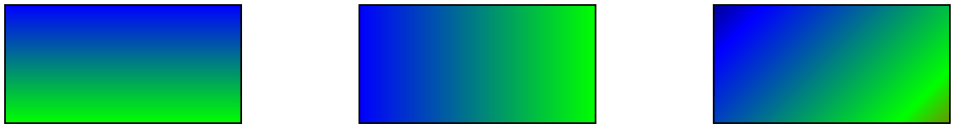

The TikZ and PGF Packages
Manual for version 3.1.9a
The Basic Layer
113 Shadings
113.1 Overview¶
A shading is an area in which the color changes smoothly between different colors. Similarly to an image, a shading must first be declared before it can be used. Also similarly to an image, a shading is put into a TeX-box. Hence, in order to include a shading in a {pgfpicture}, you have to use \pgftext around it.
There are different kinds of shadings: horizontal, vertical, radial, and functional shadings. However, you can rotate and clip shadings like any other graphics object, which allows you to create more complicated shadings. Horizontal shadings could be created by rotating a vertical shading by 90 degrees, but explicit commands for creating both horizontal and vertical shadings are included for convenience.
Once you have declared a shading, you can insert it into the text using the command \pgfuseshading. This command cannot be used directly in a {pgfpicture}, you have to put a \pgftext around it. The second command for using shadings, \pgfshadepath, on the other hand, can only be used inside {pgfpicture} environments. It will “fill” the current path with the shading.
A horizontal shading is a horizontal bar of a certain height whose color changes smoothly. You must at least specify the colors at the left and at the right end of the bar, but you can also add color specifications for points in between. For example, suppose you wish to create a bar that is red at the left end, green in the middle, and blue at the end, and you would like the bar to be 4cm long. This could be specified as follows:
rgb(0cm)=(1,0,0); rgb(2cm)=(0,1,0); rgb(4cm)=(0,0,1)
This line means that at 0cm (the left end) of the bar, the color should be red, which has red-green-blue (rgb) components (1,0,0). At 2cm, the bar should be green, and at 4cm it should be blue. Instead of rgb, you can currently also specify cmyk as color model, in which case four values are needed, gray as color model, in which case only one value is needed, or color, in which case you must provide the name of a color in parentheses. In a color specification the individual specifications must be separated using a semicolon, which may be followed by a whitespace (like a space or a newline). Individual specifications must be given in increasing order.
113.1.1 Color models¶
by David Purton
An attempt is made to produce shadings consistent with the currently selected xcolor package color model. The rgb, cmyk, and gray color models from the xcolor package are supported.
Note: The color model chosen for a shading is based on the xcolor color model at the time the shading is created. This is either when \pgfdeclare*shading is called with no optional argument or when \pgfuseshading is called if \pgfdeclare*shading was called with an optional argument.
If the xcolor package natural color model is in use then the shading color model will be rgb by default. In practice this means that if you are using the natural color model of the xcolor package you can get mismatched colors if you, for example, create a shading from green (which is defined as rgb) to magenta (which is defined as cmyk). The shading will finish with rgb magenta which will look different to the cmyk magenta used in solid colors.
You can avoid mismatched colors by loading the xcolor package first with an explicit color model (rgb, cmyk, or gray).
\begin{tikzpicture}
\fill[green] (0,0) rectangle
(1,1);
\shade[left color=green, right color=magenta] (1.25,0) rectangle
(3.75,1);
\fill[magenta] (4,0) rectangle
(5,1);
\end{tikzpicture}
113.2 Declaring Shadings¶
113.2.1 Horizontal and Vertical Shadings¶
\pgfdeclarehorizontalshading[⟨color list⟩]{⟨shading name⟩}{⟨shading height⟩}{⟨color specification⟩} ¶
Declares a horizontal shading named ⟨shading name⟩ of the specified ⟨height⟩ with the specified colors. The width of the bar is deduced automatically from the maximum dimension in the specification.
\pgfdeclarehorizontalshading{myshadingA}
{1cm}{rgb(0cm)=(1,0,0); color(2cm)=(green); color(4cm)=(blue)}
\pgfuseshading{myshadingA}
The effect of the ⟨color list⟩, which is a comma-separated list of colors, is the following: Normally, when this list is empty, once a shading has been declared, it becomes “frozen”. This means that even if you change a color that was used in the declaration of the shading later on, the shading will not change. By specifying a ⟨color list⟩ you can specify that the shading should be recalculated whenever one of the colors listed in the list changes (this includes effects like color mixins and xcolor color models). Thus, when you specify a ⟨color list⟩, whenever the shading is used, pgf first converts the colors in the list to tuples in the current xcolor color model using the current values of the colors and taking any mixins and blends into account. If the resulting tuples have not yet been used, a new shading is internally created and used. Note that if the option ⟨color list⟩ is used, then no shading is created until the first use of \pgfuseshading. In particular, the colors mentioned in the shading need not be defined when the declaration is given.
When a shading is recalculated because of a change in the colors mentioned in ⟨color list⟩, the complete shading is recalculated. Thus even colors not mentioned in the list will be used with their current values, not with the values they had upon declaration.
\pgfdeclarehorizontalshading[mycolor]{myshadingB}
{1cm}{rgb(0cm)=(1,0,0); color(2cm)=(mycolor)}
\colorlet{mycolor}{green}
\pgfuseshading{myshadingB}
\colorlet{mycolor}{blue}
\pgfuseshading{myshadingB}
\pgfdeclareverticalshading[⟨color list⟩]{⟨shading name⟩}{⟨shading width⟩}{⟨color specification⟩} ¶
Declares a vertical shading named ⟨shading name⟩ of the specified ⟨width⟩. The height of the bar is deduced automatically. The effect of ⟨color list⟩ is the same as for horizontal shadings.
\pgfdeclareverticalshading{myshadingC}
{4cm}{rgb(0cm)=(1,0,0); rgb(1.5cm)=(0,1,0); rgb(2cm)=(0,0,1)}
\pgfuseshading{myshadingC}
113.2.2 Radial Shadings¶
\pgfdeclareradialshading[⟨color list⟩]{⟨shading name⟩}{⟨center point⟩}{⟨color specification⟩} ¶
Declares a radial shading. A radial shading is a circle whose inner color changes as specified by the color specification. Assuming that the center of the shading is at the origin, the color of the center will be the color specified for 0cm and the color of the border of the circle will be the color for the maximum dimension given in the ⟨color specified⟩. This maximum will also be the radius of the circle. If the ⟨center point⟩ is not at the origin, the whole shading inside the circle (whose size remains exactly the same) will be distorted such that the given center now has the color specified for 0cm. The effect of ⟨color list⟩ is the same as for horizontal shadings.
\pgfdeclareradialshading{sphere}{\pgfpoint{0.5cm}{0.5cm}}%
{rgb(0cm)=(0.9,0,0);
rgb(0.7cm)=(0.7,0,0);
rgb(1cm)=(0.5,0,0);
rgb(1.05cm)=(1,1,1)}
\pgfuseshading{sphere}
113.2.3 General (Functional) Shadings¶
\pgfdeclarefunctionalshading[⟨color list⟩]{⟨shading name⟩}{⟨lower left corner⟩}{⟨upper right corner⟩}
{⟨init code⟩}{⟨type 4 function⟩}
¶
Warning: These shadings are the least portable of all and they put the heaviest burden of the renderer. They are slow and, possibly, will not print correctly!
This command creates a functional shading. For such a shading, the color of each point is calculated by calling a function that takes the coordinates of the point as input and yields the color as an output. Note that the function is evaluated by the renderer, not by pgf or TeX or someone else at compile-time. This means that the evaluation of this function has to be done extremely quickly and the function should be very simple. For this reason, only a very restricted set of operations are possible in the function and functions should be kept small. Any errors in the function will only be noticed by the renderer.
The syntax for specifying functions is the following: You use a simplified form of a subset of the PostScript language. This subset will be understood by the PDF-renderer (yes, PDF-renderers do have a basic understanding of PostScript) and also by PostScript renders. This subset is detailed in Section 3.9.4 of the PDF-specification (version 1.7). In essence, the specification states that these functions may contain “expressions involving integers, real numbers, and boolean values only. There are no composite data structures such as strings or arrays, no procedures, and no variables or names.” The allowed operators are (exactly) the following: abs, add, atan, ceiling, cos, cvi, cvr, div, exp, floor, idiv, ln, log, mod, mul, neg, round, sin, sqrt, sub, truncate, and, bitshift, eq, false, ge, gt, le, lt, ne, not, or, true, xor, if, ifelse, copy, dup, exch, index, pop.
When the function is evaluated, the top two stack elements are the coordinates of the point for which the color should be computed. The coordinates are dimensionless and given in big points, so for the coordinate \((50bp, 72.27pt)\) the top two stack elements would be 50.0 and 72.0. Otherwise, the (virtual) stack is empty (or should be treated as if it were empty). The function should then replace these two values by three values, representing the red, green, and blue color of the point for an rgb shading, four colors, representing the cyan, magenta, yellow, and black color of the point for a cmyk shading, or one value representing the gray color for a grayscale shading. The numbers should be real values, not integers since, Apple’s PDF renderer is broken in this regard (use cvr at the end if necessary).
Conceptually, the function will be evaluated once for each point of the rectangle ⟨lower left corner⟩ to ⟨upper right corner⟩, which should be a pgf-point expression like \pgfpoint{100bp}{100bp}. A renderer may choose to evaluate the function at less points, but, in principle, the function will be evaluated for each pixel independently.
Because of the rather difficult PostScript syntax, use this macro only if you know what you are doing (or if you are adventurous, of course).
As for other shadings, the optional ⟨color list⟩ is used to determine whether a shading needs to be recalculated when a color has changed.
The ⟨init code⟩ is executed each time a shading is (re)calculated. Typically, it will contain code to extract coordinates from colors.
\pgfdeclarefunctionalshading{twospots}
{\pgfpointorigin}{\pgfpoint{4cm}{4cm}}{}{
% Save coordinates for later
2
copy
% Compute distance from (40bp,45bp), with x doubled
45
sub
dup
mul
exch
40
sub
dup
mul
0.5
mul
add
sqrt
% exponential decay
dup
mul
neg
1.0005
exch
exp
1.0
exch
sub
% Compute distance from (70bp,70bp) from stored coordinate,
scaled
3
1
roll
70
sub
dup
mul
.5
mul
exch
70
sub
dup
mul
add
sqrt
% Decay
dup
mul
neg
1.002
exch
exp
1.0
exch
sub
% red component
1.0
3
1
roll
}
\pgfuseshading{twospots}
Inside the PostScript function ⟨type 4 function⟩ you cannot use colors directly. Rather, you must push the color components on the stack. For this, it is useful to call one of \pgfshadecolortorgb, \pgfshadecolortocmyk, or \pgfshadecolortogray in the ⟨init code⟩:
\pgfshadecolortorgb{⟨color name⟩}{⟨macro⟩} ¶
This command takes ⟨color name⟩ as input, converts it to rgb and stores the color’s red/green/blue components real numbers between 0.0 and 1.0 separated by spaces (which is exactly what you need if you want to push it on a stack) in ⟨macro⟩. This macro can then be used inside the ⟨type 4 function⟩ argument for \pgfdeclarefunctionalshading.
\pgfdeclarefunctionalshading[mycol]{sweep}{\pgfpoint{-1cm}{-1cm}}
{\pgfpoint{1cm}{1cm}}{\pgfshadecolortorgb{mycol}{\myrgb}}{
2
copy
% whirl
% Calculate "safe" atan of position
2
copy
abs
exch
abs
add
0.0001
ge
{ atan
} { pop
} ifelse
3
1
roll
dup
mul
exch
dup
mul
add
sqrt
30
mul
add
sin
1
add
2
div
dup
\myrgb % push mycol
5
4
roll
% multiply all components by calculated value
mul
3
1
roll
3
index
mul
3
1
roll
4
3
roll
mul
3
1
roll
}
\colorlet{mycol}{white}%
\pgfuseshading{sweep}%
\colorlet{mycol}{red}%
\pgfuseshading{sweep}
In addition, three macros suffixed with red, green and blue are defined, which store the individual components of ⟨color name⟩. These can also be used in the ⟨type 4 function⟩ argument.
\mycol=1.0 0.5 0.0 \mycolred=1.0 \mycolgreen=0.5 \mycolblue=0.0
\pgfshadecolortorgb{orange}{\mycol}
|\mycol|=\mycol |\mycolred|=\mycolred |\mycolgreen|=\mycolgreen |\mycolblue|=\mycolblue
\pgfdeclarefunctionalshading[col1,col2,col3,col4]{bilinear
interpolation}
{\pgfpointorigin}{\pgfpoint{100bp}{100bp}}
{
\pgfshadecolortorgb{col1}{\first}\pgfshadecolortorgb{col2}{\second}
\pgfshadecolortorgb{col3}{\third}\pgfshadecolortorgb{col4}{\fourth}
}{
100
div
exch
100
div
2
copy
% Calculate y/100 x/100.
neg
1
add
exch
neg
1
add
% Calculate 1-y/100 1-x/100.
3
1
roll
2
copy
exch
5
2
roll
6
copy
6
copy
% Set up stack.
\firstred mul
exch
\secondred mul
add
mul
% Process red component.
4
1
roll
\thirdred mul
exch
\fourthred mul
add
mul
add
13
1
roll
\firstgreen mul
exch
\secondgreen mul
add
mul
% Process green component.
4
1
roll
\thirdgreen mul
exch
\fourthgreen mul
add
mul
add
7
1
roll
\firstblue mul
exch
\secondblue mul
add
mul
% Process blue component.
4
1
roll
\thirdblue mul
exch
\fourthblue mul
add
mul
add
}
\colorlet{col1}{blue}
\colorlet{col2}{yellow}
\colorlet{col3}{red}
\colorlet{col4}{green}
\pgfuseshading{bilinear
interpolation}
\pgfshadecolortocmyk{⟨color name⟩}{⟨macro⟩} ¶
This command takes ⟨color name⟩ as input, converts it to cmyk and stores the color’s cyan/magenta/yellow/black components real numbers between 0.0 and 1.0 separated by spaces.
In addition, four macros suffixed with cyan, magenta, yellow and black are defined, which store the individual components of ⟨color name⟩.
\pgfshadecolortogray{⟨color name⟩}{⟨macro⟩} ¶
This command takes ⟨color name⟩ as input converts it to grayscale and stores the color’s value as a real number between 0.0 and 1.0.
Although it’s not needed, for consistency a second macro suffixed with gray is also defined.
Color model independent functional shadings.
By nature, the PostScript code used in functional shadings must output one of rgb, cmyk, or grayscale data. Therefore, \pgfdeclarefunctionalshading is not portable across color models.
Take particular care that the same color model is in use at declaration time and use time for functional shadings declared with an optional argument as otherwise the PostScript data will not match the declared color space and you will end up with a malformed PDF.
Having said this, it is possible to create portable functional shadings by providing conditional code to append color transformations to the PostScript data. A variety of \pgffuncshading*to* (e.g., \pgffuncshadingrgbtocmyk) macros along with \ifpgfshadingmodel* (e.g., \ifpgfshadingmodelcmyk) conditionals are provided to assist with these transformations. Obviously, this will make the PostScript code less efficient than if you work in your intended color model.
\pgfdeclarefunctionalshading[black]{portabletwospots}{\pgfpointorigin}{\pgfpoint{3.5cm}{3.5cm}}{}{
2
copy
45
sub
dup
mul
exch
40
sub
dup
mul
0.5
mul
add
sqrt
dup
mul
neg
1.0005
exch
exp
1.0
exch
sub
3
1
roll
70
sub
dup
mul .5
mul
exch
70
sub
dup
mul
add
sqrt
dup
mul
neg
1.002
exch
exp
1.0
exch
sub
1.0
3
1
roll
\ifpgfshadingmodelcmyk
\pgffuncshadingrgbtocmyk
\fi
\ifpgfshadingmodelgray
\pgffuncshadingrgbtogray
\fi
}
\pgffuncshadingrgbtocmyk ¶
Within the ⟨type 4 function⟩ argument of \pgfdeclarefunctionalshading, this command can be used to convert the top 3 elements on the stack from rgb to cmyk. In combination with the \ifpgfshadingmodelcmyk conditional this macro can be used to make functional shading declarations more portable across color models.
\pgffuncshadingrgbtogray ¶
Within the ⟨type 4 function⟩ argument of \pgfdeclarefunctionalshading, this command can be used to convert the top 3 elements on the stack from rgb to grayscale. In combination with the \ifpgfshadingmodelgray conditional this macro can be used to make functional shading declarations more portable across color models.
\pgffuncshadingcmyktorgb ¶
Within the ⟨type 4 function⟩ argument of \pgfdeclarefunctionalshading, this command can be used to convert the top 4 elements on the stack from cmyk to rgb. In combination with the \ifpgfshadingmodelrgb conditional this macro can be used to make functional shading declarations more portable across color models.
\pgffuncshadingcmyktogray ¶
Within the ⟨type 4 function⟩ argument of \pgfdeclarefunctionalshading, this command can be used to convert the top 4 elements on the stack from cmyk to grayscale. In combination with the \ifpgfshadingmodelgray conditional this macro can be used to make functional shading declarations more portable across color models.
\pgffuncshadinggraytorgb ¶
Within the ⟨type 4 function⟩ argument of \pgfdeclarefunctionalshading, this command can be used to convert the top element on the stack from grayscale to rgb. In combination with the \ifpgfshadingmodelrgb conditional this macro can be used to make functional shading declarations more portable across color models.
\pgffuncshadinggraytocmyk ¶
Within the ⟨type 4 function⟩ argument of \pgfdeclarefunctionalshading, this command can be used to convert the top element on the stack from grayscale to cmyk. In combination with the \ifpgfshadingmodelcmyk conditional this macro can be used to make functional shading declarations more portable across color models.
\ifpgfshadingmodelrgb ¶
Within the ⟨type 4 function⟩ argument of \pgfdeclarefunctionalshading, this command can be used to test if the xcolor color model is rgb at the time the shading is created. This can be used to ensure that the data output in the ⟨type 4 function⟩ correctly matches the active color model.
\ifpgfshadingmodelcmyk ¶
Within the ⟨type 4 function⟩ argument of \pgfdeclarefunctionalshading, this command can be used to test if the xcolor color model is cmyk at the time the shading is created. This can be used to ensure that the data output in the ⟨type 4 function⟩ correctly matches the active color model.
\ifpgfshadingmodelgray ¶
Within the ⟨type 4 function⟩ argument of \pgfdeclarefunctionalshading, this command can be used to test if the xcolor color model is gray at the time the shading is created. This can be used to ensure that the data output in the ⟨type 4 function⟩ correctly matches the active color model.
113.3 Using Shadings¶
\pgfuseshading{⟨shading name⟩} ¶
Inserts a previously declared shading into the text. If you wish to use it in a pgfpicture environment, you should put a \pgftext around it.
\begin{pgfpicture}
\pgfdeclareverticalshading{myshadingD}
{20pt}{color(0pt)=(red); color(20pt)=(blue)}
\pgftext[at=\pgfpoint{1cm}{0cm}] {\pgfuseshading{myshadingD}}
\pgftext[at=\pgfpoint{2cm}{0.5cm}]{\pgfuseshading{myshadingD}}
\end{pgfpicture}
\pgfshadepath{⟨shading name⟩}{⟨angle⟩} ¶
This command must be used inside a {pgfpicture} environment. The effect is a bit complex, so let us go over it step by step.
First, pgf will set up a local scope.
Second, it uses the current path to clip everything inside this scope. However, the current path is once more available after the scope, so it can be used, for example, to stroke it.
Now, the ⟨shading name⟩ should be a shading whose width and height are 100bp, that is, 100 big points. pgf has a look at the bounding box of the current path. This bounding box is computed automatically when a path is computed; however, it can sometimes be (quite a bit) too large, especially when complicated curves are involved.
Inside the scope, the low-level transformation matrix is modified. The center of the shading is translated (moved) such that it lies on the center of the bounding box of the path. The low-level coordinate system is also scaled such that the shading “covers” the path (the details are a bit more complex, see below). Then, the coordinate system is rotated by ⟨angle⟩. Finally, if the macro \pgfsetadditionalshadetransform has been used, an additional transformation is applied.
After everything has been set up, the shading is inserted. Due to the transformations and clippings, the effect will be that the shading seems to “fill” the path.
If both the path and the shadings were always rectangles and if rotations were never involved, it would be easy to scale shadings such they always cover the path. However, when a vertical shading is rotated, it must obviously be “magnified” so that it still covers the path. Things get worse when the path is not a rectangle itself.
For these reasons, things work slightly differently “in reality”. The shading is scaled and translated such that the point \((50\mathrm {bp},50\mathrm {bp})\), which is the middle of the shading, is at the middle of the path and such that the point \((25\mathrm {bp},25\mathrm {bp})\) is at the lower left corner of the path and that \((75\mathrm {bp},75\mathrm {bp})\) is at upper right corner.
In other words, only the center quarter of the shading will actually “survive the clipping” if the path is a rectangle. If the path is not a rectangle, but, say, a circle, even less is seen of the shading. Here is an example that demonstrates this effect:
\pgfdeclareverticalshading{myshadingE}{100bp}
{color(0bp)=(red); color(25bp)=(green); color(75bp)=(blue); color(100bp)=(black)}
\pgfuseshading{myshadingE}
\hskip 1cm
\begin{pgfpicture}
\pgfpathrectangle{\pgfpointorigin}{\pgfpoint{2cm}{1cm}}
\pgfshadepath{myshadingE}{0}
\pgfusepath{stroke}
\pgfpathrectangle{\pgfpoint{3cm}{0cm}}{\pgfpoint{1cm}{2cm}}
\pgfshadepath{myshadingE}{0}
\pgfusepath{stroke}
\pgfpathrectangle{\pgfpoint{5cm}{0cm}}{\pgfpoint{2cm}{2cm}}
\pgfshadepath{myshadingE}{45}
\pgfusepath{stroke}
\pgfpathcircle{\pgfpoint{9cm}{1cm}}{1cm}
\pgfshadepath{myshadingE}{45}
\pgfusepath{stroke}
\end{pgfpicture}
As can be seen above in the last case, the “hidden” part of the shading actually can become visible if the shading is rotated. The reason is that it is scaled as if no rotation took place, then the rotation is done.
The following graphics show which part of the shading are actually shown:
\pgfdeclareverticalshading{myshadingF}{100bp}
{color(0bp)=(red); color(25bp)=(green); color(75bp)=(blue); color(100bp)=(black)}
\begin{tikzpicture}
\draw (50bp,50bp) node
{\pgfuseshading{myshadingF}};
\draw[white,thick] (25bp,25bp) rectangle
(75bp,75bp);
\draw (50bp,0bp) node[below] {first
two
applications};
\begin{scope}[xshift=5cm]
\draw (50bp,50bp) node{\pgfuseshading{myshadingF}};
\draw[rotate around={45:(50bp,50bp)},white,thick] (25bp,25bp) rectangle
(75bp,75bp);
\draw (50bp,0bp) node[below] {third
application};
\end{scope}
\begin{scope}[xshift=10cm]
\draw (50bp,50bp) node{\pgfuseshading{myshadingF}};
\draw[white,thick] (50bp,50bp) circle
(25bp);
\draw (50bp,0bp) node[below] {fourth
application};
\end{scope}
\end{tikzpicture}
An advantage of this approach is that when you rotate a radial shading, no distortion is introduced:
\pgfdeclareradialshading{ballshading}{\pgfpoint{-10bp}{10bp}}
{color(0bp)=(red!15!white); color(9bp)=(red!75!white);
color(18bp)=(red!70!black); color(25bp)=(red!50!black); color(50bp)=(black)}
\pgfuseshading{ballshading}
\hskip 1cm
\begin{pgfpicture}
\pgfpathrectangle{\pgfpointorigin}{\pgfpoint{1cm}{1cm}}
\pgfshadepath{ballshading}{0}
\pgfusepath{}
\pgfpathcircle{\pgfpoint{3cm}{0cm}}{1cm}
\pgfshadepath{ballshading}{0}
\pgfusepath{}
\pgfpathcircle{\pgfpoint{6cm}{0cm}}{1cm}
\pgfshadepath{ballshading}{45}
\pgfusepath{}
\end{pgfpicture}
If you specify a rotation of \(90^\circ \) and if the path is not a square, but an elongated rectangle, the “desired” effect results: The shading will exactly vary between the colors at the 25bp and 75bp boundaries. Here is an example:

\pgfdeclareverticalshading{myshadingG}{100bp}
{color(0bp)=(red); color(25bp)=(green); color(75bp)=(blue); color(100bp)=(black)}
\begin{pgfpicture}
\pgfpathrectangle{\pgfpointorigin}{\pgfpoint{2cm}{1cm}}
\pgfshadepath{myshadingG}{0}
\pgfusepath{stroke}
\pgfpathrectangle{\pgfpoint{3cm}{0cm}}{\pgfpoint{2cm}{1cm}}
\pgfshadepath{myshadingG}{90}
\pgfusepath{stroke}
\pgfpathrectangle{\pgfpoint{6cm}{0cm}}{\pgfpoint{2cm}{1cm}}
\pgfshadepath{myshadingG}{45}
\pgfusepath{stroke}
\end{pgfpicture}
As a final example, let us define a “rainbow spectrum” shading for use with TikZ.

\pgfdeclareverticalshading{rainbow}{100bp}
{color(0bp)=(red); color(25bp)=(red); color(35bp)=(yellow);
color(45bp)=(green); color(55bp)=(cyan); color(65bp)=(blue);
color(75bp)=(violet); color(100bp)=(violet)}
\begin{tikzpicture}[shading=rainbow]
\shade (0,0) rectangle
node[white] {\textsc{pride}} (2,1);
\shade[shading angle=90] (3,0) rectangle
+(1,2);
\end{tikzpicture}
Note that rainbow shadings are way too colorful in almost all applications.
\pgfsetadditionalshadetransform{⟨transformation⟩} ¶
This command allows you to specify an additional transformation that should be applied to shadings when the \pgfshadepath command is used. The ⟨transformation⟩ should be transformation code like \pgftransformrotate{20}.